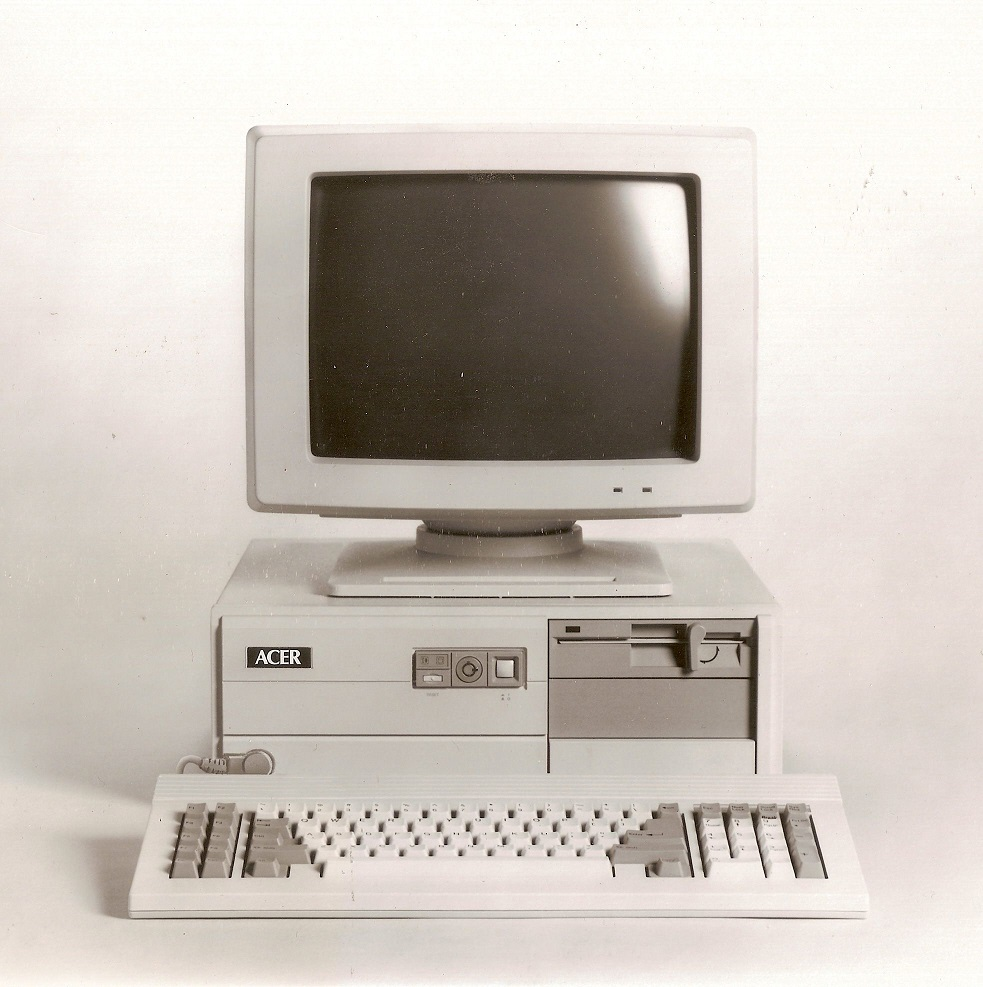

School
It all started in the early 90s when I was in my preparatory stage at my school and we were first introduced to QBASIC, and it was music to my ears, that's when I fell in love with writing code. I started writing small programs on scrapes of paper and imagining how the output would be, I didn't have a PC then. But my teachers convinced my parents I needded one, soon I got my first PC: a 386 with 80 megabytes of storage!